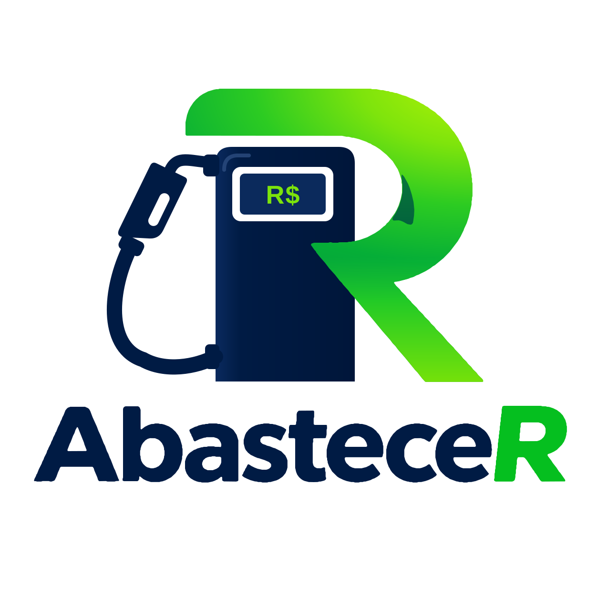
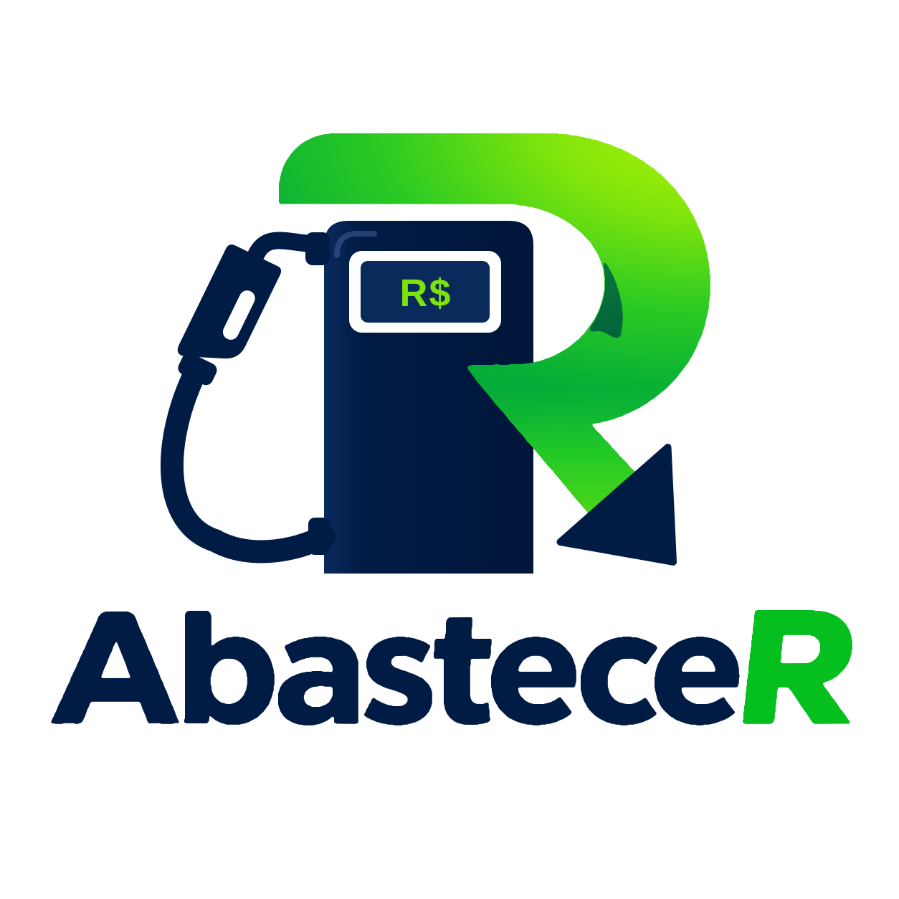
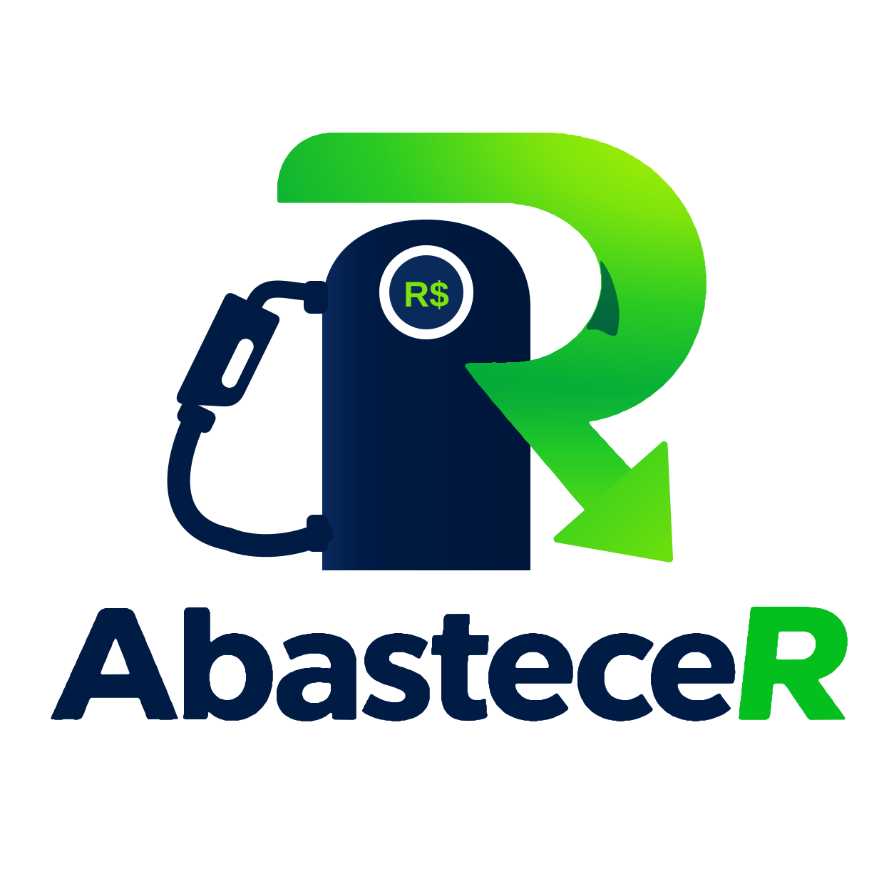
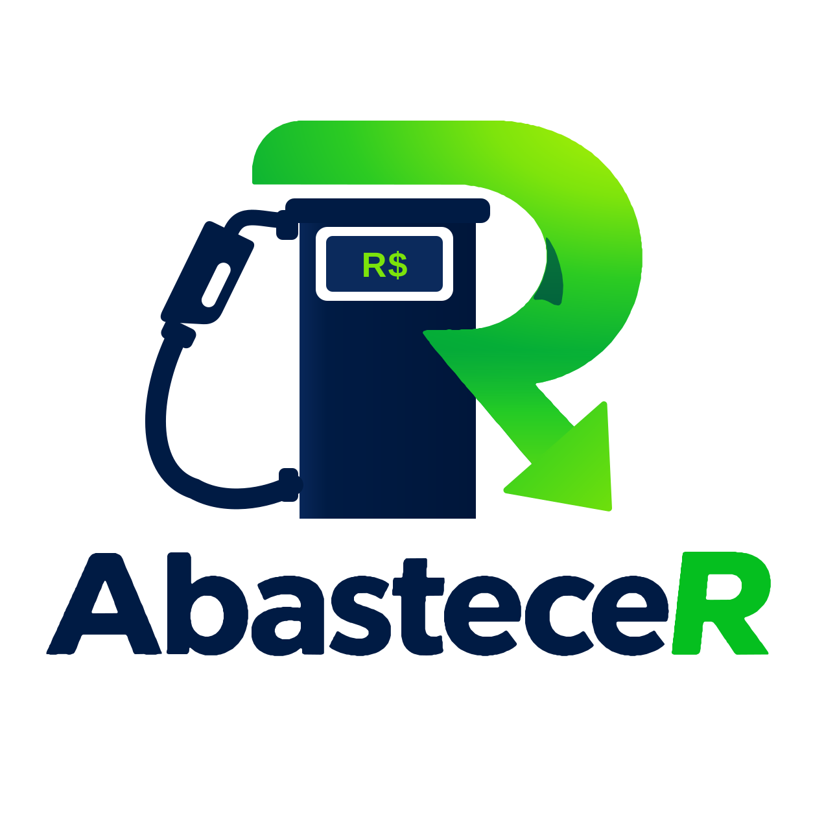

<!doctype html><meta charset="utf-8"><title>AbasteceR · fundo amarelo</title><style>body{margin:0;padding:20px;background:#eef1f5;font-family:Arial;display:flex;flex-wrap:wrap;gap:20px}section{background:#fff;border-radius:16px;padding:18px;width:620px} h2{margin:0 0 8px;font-size:20px;color:#001B44}.lado{display:flex;gap:14px;align-items:center} img{display:block} .logo{width:380px;height:380px}.ics{display:flex;flex-direction:column;gap:12px;align-items:center}.ic{width:180px;height:180px;border-radius:40px;box-shadow:0 2px 8px rgba(0,0,0,.18)}.ic.p{width:64px;height:64px;border-radius:15px} .ic.pp{width:40px;height:40px;border-radius:10px}</style><section id="am_a_sg"><h2>A · R entrando na frente da bomba (sem seta) (sem gota)</h2><div class="lado"><div class="ics"></div></div></section><section id="am_b_sg"><h2>B · Seta verde (sem gota)</h2><div class="lado"><div class="ics"></div></div></section><section id="am_c_sg"><h2>C · Seta verde larga (sem gota)</h2><div class="lado"><div class="ics"></div></div></section><section id="am_d_sg"><h2>D · Seta na cor da bomba (sem gota)</h2><div class="lado"><div class="ics"></div></div></section><section id="am_e_sg"><h2>E · Bomba retrô (topo em arco) + seta verde (sem gota)</h2><div class="lado"><div class="ics"></div></div></section><section id="am_f_sg"><h2>F · Bomba moderna (canto assimétrico) + seta verde (sem gota)</h2><div class="lado"><div class="ics"></div></div></section><section id="am_g_sg"><h2>G · Bomba com tampa + seta verde (sem gota)</h2><div class="lado"><div class="ics"></div></div></section>